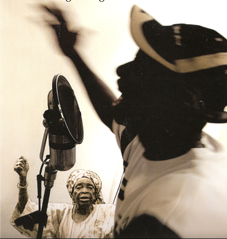
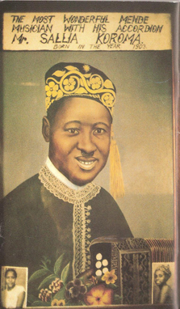

10. Topical and Political Songs
Topical and local poetry. Songs of political parties and movements: Mau Mau hymns; Guinea R.D.A. songs; Northern Rhodesian party songs.
It has been well said that oral poetry takes the place of newspapers among non-literate peoples. Songs can be used to report and comment on current affairs, for political pressure, for propaganda, and to reflect and mould public opinion. This political and topical function can be an aspect of many of the types of poetry already discussed—work songs, lyric, praise poetry, even at times something as simple as a lullaby—but it is singled out for special discussion in this chapter. It is of particular importance to draw attention to this and to give a number of examples because of the common tendency in studies of African verbal art to concentrate mainly on the ‘traditional’—whether in romanticizing or in deprecating tone—and to overlook its topical functions, especially its significance in contemporary situations. There have been a few admirable exceptions to this attitude to African oral literature, notably Tracey and others associated with the African Music Society (see esp. Rhodes 1962). Other references are given throughout this chapter.1
The political role of poetry is not just of recent origin in Africa. It is true that the present widespread occurrence of political songs directly associated with modern political parties and national politics did not antedate the founding of such organizations and their relevance in the contemporary political scene. But it would be a very narrow view of politics that would confine it only to the affairs of political parties or the formal institutions of modern nation states. In the wider sense it is certain that there were many political songs and poems in the past. Panegyric is an obvious example, involving propaganda and support for the authorities, taking its extreme form in the mouth of the official court poet responsible for propagating the versions of historical events authorized by the rulers. Poetry can also be used to pressurize those in authority or to comment on local politics. Songs of insult, challenge, or satirical comment also have a long history, and can function not only on a personal level but also as politically effective weapons.2
Though such satirical and topical poems will be treated separately from party political songs here, it would be a mistake to assume too easily that there is necessarily a complete break in continuity between ‘traditional’ political poetry and that of ‘modern politics’. It would be more accurate to say that the long-standing interests in oral literature and in politics have, not surprisingly, proved adaptable to the particular political circumstances of the mid-twentieth century.
I
At a local level public singing can take the place of the press, radio, and publication as a way of expressing public opinion and bringing pressure to bear on individuals. This has been particularly well documented of the Chopi people of Portuguese East Africa (Tracey 1945, 1948a). Tracey speaks of the ‘democratic purpose’ of their poetry and the way ‘poetic justice’ can be said to be achieved through public singing. Established chiefs can be criticized in this way—the medium of song being used for what cannot be said directly:
You, Chugela, you are proud of your position, yet you are only a chief made by the white man.
Oh, the chieftainship of Nyaligolana and Chugela!
Oh, the chieftainship of Nyaligolana and Chugela!
It is a shame that should be hidden from Wani.3
Chugela is always asking presents from his brother.
Sitiki is excluded from the council. They say they don’t know him.
The country of Mawewana is full of troubles.
(Tracey 1948a: 68)
The lines are from a poem attacking the young chief Chugela who, though only of the junior branch of the family, was being supported by the authorities after their deposition of previous (senior) chiefs. The poet is also seeking to publicize the view that Sitiki, the best brain of the district and so by rights a councillor, is being ignored by Chugela (as interpreted in Tracey 1945).
Another Chopi poem is designed to put an ambitious man in his place, an instance of mild political propaganda. Fambanyane had tried to throw his weight around and exaggerate his claims to the chiefship. He was regarded as a public nuisance because of his threats against the other candidate, Manjengwe, and was eventually arrested:
We are saying,
We have reason to say we believe
Fambanyane would have liked to be Chief.
Fambanyane was brought before the judge,
So now he can’t threaten Manjengwe.
He has lost his chance of wearing chief’s uniform.
We are saying,
We have reason to say we believe
Fambanyane would have liked to be Chief.
(Tracey 1948a)
The Chopi are not alone in the use they make of song to attack unpopular public figures. Among many other instances one can quote the effective Somali poem addressed to a sultan who was ignoring the clan assembly and trying to assume dictatorial powers. The sultan—no match for the poet—was deposed:
The vicissitudes of the world, oh ‘Olaad, are like the clouds of the seasons
Autumn weather and spring weather come after each other in turn
Into an encampment abandoned by one family, another family moves
If a man is killed, one of his relatives will marry his widow
Last night you were hungry and alone, but tonight people will feast you as a guest
When fortune places a man even on the mere hem of her robe, he quickly becomes proud and overbearing.
A small milking vessel, when filled to the brim, soon overflows.
(Andrzejewski 1963: 24)
Pressure on those with or aspiring to positions of power can also be offered in the guise of flattery. Some instances of this have already been noticed in Chapter 5 on panegyric. Again, one could cite the piece of Yoruba advice to a pretender to the Alafin’s throne:
Be the king at once my lord,
Cease acting like a king
(Beier 1956: 26)
or, in a rather different context, a poem praising Olorum Nimbe, then Mayor of Lagos. Cast in the form of a piece of popular dance music, it yet proffered advice and instruction:
I am greeting you, Mayor of Lagos,
Mayor of Lagos, Olorum Nimbe,
Look after Lagos carefully.
As we pick up a yam pounder with care,
As we pick up a grinding stone with care,
As we pick up a child with care,
So may you handle Lagos with care.
(Beier 1956: 28)
This indirect means of communicating with someone in power through the artistic medium of a song is a way by which the singers hope to influence while at the same time avoiding the open danger of speaking directly. The conventionality of the song makes it possible to indicate publicly what could not be said privately or directly to a man’s face. To take only one example: when Merriam was collecting song texts among the Shi of the Kivu area in the Congo some were sung to him while he was with a plantation owner. It turned out that the girls working on the plantation were using these songs to express their dissatisfaction with the owner. They felt it impossible to raise this directly with him, but were seizing the opportunity to convey it indirectly. They sang, for instance, of the way the employer had recently stopped giving them salt and oil:
We have finished our work. Before, we used to get oil; now we don’t get it. Why has Bwana stopped giving us oil? We don’t understand. If he doesn’t give us oil, we will all leave and go to work for the Catholic Fathers. There we can do little work and have plenty of oil. So we are waiting now to see whether Bwana X will give oil. Be careful! If we don’t get oil, we won’t work here.
(Merriam 1954: 51–2)
Not all criticisms of superiors are equally indirect. One could mention the increasingly harsh and direct innuendo of the unsatisfied Hausa praise singer (above Ch. 4: 94–5) or Hahn’s description of the Hottentots in the nineteenth century. He reports how unpopular chiefs were lectured by women in sarcastic ‘reed-songs’ (a habit ruefully commented on in the Hottentot proverb about women—’They cannot be as long quiet as it takes sweet milk to get sour’) and describes one occasion when the young girls sang into the chief’s face telling him
that he was a hungry hyena and a roguish jackal; that he was the brown vulture who is not only satisfied with tearing the flesh from the bones, but also feasted on the intestines.
(Hahn 1881: 28)
In all these cases the oblique and limited nature of the attack is maintained by its limitation to a medium with its own artistic conventions or to specially privileged singers, sometimes allowed to perform only on particular occasions.
Songs are also directed against opposing groups or individuals. These can take many forms. There are, for instance, the half-joking ‘moqueries de villages’ among the Dogon, exchanged between individuals of the same age, between villages, or between different quarters of the same village. Some of these are only short phrases, but there are also longer texts, and, within the conventional form, ‘l’imagination fertile et l’ironie acérée des Dogon ne se font pas faute d’inventer sans cesse de nouvelles plaisanteries’ (Calame-Griaule 1954b: 13). The faults and customs of others are ironically commented on or their accents parodied and ridiculed. Of a more serious and poetic nature are the songs reported from the Ewe of Ghana. There, when two villages quarrel, they compose abusive songs against each other, usually directed against the offending elder of the opposing village. Some of these are very elaborate and can last, without repetition, for as long as half an hour (Gbeho 1954: 62).
Similar self-assertive songs by groups can equally take place in an urban environment. Mitchell has analysed the songs of kalela dance teams on the Copperbelt in the early 1950s (Mitchell 1956). Each team boasts of its own distinctiveness as against other tribes and jokingly derides the customs and languages of others, Yet the content of the songs themselves not only reflects the preoccupations, events, even language of life in the towns, but also, paradoxically, by its very attacks on other ethnic groups recognizes their significance for the singers (for a parallel with the kalela dance see Lambert 1962–3a).
Again, songs can be used to assert the unity of trade union groups. The following examples from Tanganyika bring out the distinction between employer and employee:
We regret that the employers should trifle with us,
We are deprived of our rights, indeed we know nowhere to eat.
We do their work, bring them in their money,
Clothes sprout on them through the efforts of the workers.
Give the workers’ organisations freedom
We don’t want the law to break our Unions
In a free Tanganyika may the Unions be strong
We don’t want to be despised
So let us unite and triumph over the employers.
(Whiteley 1964: 221)
Lampoons are not only used between groups but can also be a means of communicating and expressing personal enmity between hostile individuals. We hear of Galla abusive poems, for instance (Chadwicks iii, 1940: 549) while among the Yoruba when two women have quarrelled they sometimes vent their enmity by singing at each other, especially in situations—like the laundry place—when other women will hear (Mabogunje 1958: 35). Abusive songs against ordinary individuals are also sometimes directly used as a means of social pressure, enforcing the will of public opinion. Among the Chopi, for instance, we hear of a verse directed against a young man who was trying to seduce a very young girl:
We see you!
We know you are leading that child astray.
Katini (the composer) sees you but keeps quiet.
Although he knows it all right he keeps quiet,
Katini, the leader of Timbilas4
We know you!
(Tracey 1948a: 29)
A group of Hottentots took the same line against an old man who married a young girl: her friends sang ‘The first wife is dismissed, his only great thought is the second wife’ (Hahn 1881: 29).
Such songs can even be said on occasion to form part of semi-judicial proceedings against individuals. This is particularly clear in the case of the Ibo. For instance, in one area (Umuahia) oro songs are sung at night by groups of young men and women who go to the houses of those they agree have offended, and sing against them as well as causing physical damage to their possessions. A notoriously lazy man is lampooned:
Ibejimato, Ibejimato, it is time now. Woman asks you to wrestle with her but you carry your cutlass and walk about; it is time now. (Madumere 1953: 64)
Ibejimato is so lazy and fearful that he does not even dare to fight a woman; in fact they remind him that when he did once get involved in a quarrel with a woman, he actually ran away, his cutlass on his shoulder. The song is to make him realize his laziness, and make him feel ashamed and turn over a new leaf—and is supplemented by damage to his possessions. On another occasion abusive songs by women formed part of the procedure of collecting a fine already imposed on a woman for false accusation—’the execution of justice’ (Green 1964: 200). The women went in a body to the house of the offender to sing and dance against her. Both songs and dances were quite explicitly obscene and the episode had the effect of making the victim undertake to pay her fine (Green 1964: 199–205).
It is possible to exaggerate the functional aspect of such lampoons. Sheer enjoyment plays a part too. As Green writes of the episode just mentioned:
As for the women, I never saw them so spirited. They were having a night out and they were heartily enjoying it and there was a speed and energy about everything they did that gave a distinctive quality to the episode. It was also the only occasion in the village that struck one as obscene in the intention of the people themselves. Mixed with what seemed genuine amusement there was much uncontrolled, abandoned laughter. There was a suggestion of consciously kicking over the traces about the whole affair. (Green 1964: 202–3)
Even without the extra appeal of unaccustomed obscenity as in these derisive Ibo songs, this enjoyment may be just as significant as social control. Thus the Hottentots sing satirically but with humour of a childless couple:
We love each other as the goats that have no kids love
We love each other as the goats that have no kids love.
(Stopa 1938: 110)
and in Tanganyika the Asu nyimbo za kugana, songs sung in huts just before sleep, provide an opportunity for improvisation and humour as well as attack. One man starts up the song, then others reply in solo or chorus—for example, in address to a grumbler:
Ndi-ndi! Ndi-ndi! [expletives used in complaining]
Grandfather of Mruma,
He hasn’t a cow,
He hasn’t a goat,
He hasn’t a chicken,
No not (even) a rat (in his house).
(Bull 1933: 326–7)
—and so on, continued at great length, with plenty of scope for humour, until almost every conceivable possession has been named, while the chorus reply in unison ndi-ndi! after each line. Similar enjoyment is evident in the public dances and singing in Abomey (Dahomey) witnessed by Herskovits, when unpopular individuals are ridiculed and attacked in songs. Though no names are mentioned, everyone knows who is meant and rejoices in the occasion. For example:
Woman, thy soul is misshapen.
In haste was it made, in haste.
So fleshless a face speaks, telling
Thy soul was formed without care.
The ancestral clay for thy making
Was moulded in haste, in haste. A thing of no beauty art thou,
Thy face unsuited to be a face,
Thy feet unsuited for feet.
(Herskovits 1934: 78)
These derisive songs directed against specified individuals or groups shade into topical and satirical songs in general. Thus the Tiv, among many others, sing about the events of the year: they comment on the present position of chiefs or express their reactions to a recent deposition or this season’s road work. They also improvise about recent incidents and people—like the song about selling their soya beans to only one of the rival firms:
We are not going to sell our soya beans to Mallam Dama
we are going to sell them to Alhaji Sali.
(Lane 1954: 14; see also Phillips 1936)
Domestic affairs also come into such songs. The Ndau dancer comments ruefully on his father’s new wife:
My father, he married
A crocodile wife,
That bites, that bites.
-ya, I-ya-wo-ye!
(Curtis 1920: 39)
While a Baule woman sings lightly:
Je commettrai volontiers l’adultère. Les maris de mes camarades seront tour à tour mes amants. Mais qui d’entre elles aura l’audace de se plaindre?
(Effimbra 1952: 297)
These topical songs often give a vivid personal picture of a general situation and the attitude to it, as well as of the specific events they comment on. Thus in Malawi, in the late 1950s, the wives of men detained for opposition to government showed their pride in their ‘Prison Graduate’ husbands, and used to sing as they pounded their maize:
My husband is a man:
He’s away in Kanjedza.
The men who are here
Are women like us.
(Sanger 1960: 320)
Again an Acholi girl married to a soldier sings effectively of their separation: they can write letters—but what can letters do?
Writing writing writing so many letters.
Those letters can they be changed into a child?
Wives of soldiers are barren [have to wait for years before they get a child].
Wives of soldiers are truly barren.
(Okot 1963: 312)
Or a Chewa woman thinks about her husband who is away working in the copper mines:
When I get a letter from Masula
I read it with all my heart. (Tracey 1953: 19)
The same experience—from the man’s viewpoint—is touched on in a Sotho dance song in the country areas:
Basutoland is my fatherland,
At Bushman’s Nek, near Machacha, in the mountains.
I joined up for work on the mines,
But when I arrived I found myself in trouble.
I was with Molelekoa, son of Smith.
So I crossed the Vaal very early in the morning
That was when I was nearly swept down with the river.
Perhaps it was because I was running away,
Running away and leaving my passes on the veld.
I left mine in the western Transvaal,
I left both my pass and my tax receipt!
(Afr. Music 2. 2, 1959: 72–3)
The urban experiences of Africans in the towns of South Africa are commented on in many of the Zulu songs about police and passes recorded by Tracey.3 These can be illustrated from three of his examples. In the first, the scene is the pass office where all male Africans had to go to get their Registration Certificates, involving a wait of hours, even days, before being interviewed:
Take off your hat.
What is your home name?
Who is your father?
Who is your chief?
Where do you pay your tax?
What river do you drink?
We mourn for our country.
(Tracey 1963: 53)
Arrest by the police for not having the correct papers, and imprisonment in ‘Blue Sky’, the popular name of the gaol at Boksburg near Johannesburg, are the themes of the next two songs:
There comes the big van.
All over the country
They call it the Pick-up Van.
There is the Pick-up. There, there is the big van.
‘Where’s your pass?’
‘Where’s your tax?’
(Tracey 1948b: 55)
They caught him and handcuffed him!
They sent him to ‘Blue Sky’.
(Tracey 1948b: 54)
The last type of topical song to be mentioned here comprises those that particularly express the aspirations and self-appreciation of groups, songs that often have at least some political relevance. These merge into the songs already discussed, and also recall some of the military poems that reflect and reinforce the militant unity of a given group. An example would be the Akan hunting song which asserts the power of the hunter’s group against that of the chief:
Does the chief say he is greater than the hunter?
Arrogance! Hunter? Arrogance!
(Nketia 1963b: 76; see full song in Ch. 8 above)
and the trade union and kalela dance, songs could be seen to be fulfilling something of the same function. So too in the Congo the followers of the prophet Matswa expressed their protest and their allegiance in song:
Nous autres qui n’avons pas de soutien.
Nous autres qui n’avons pas de défenseur.
Dieu le Père-tout-puissant, veille sur nous.
Père Congo, Père, qui pensera à nous?
A nous autres, qui y pensera?
Matswa, Père-tout-puissant, veille sur nous.
Matswa, Père-tout-puissant, envoie-nous un défenseur.
(Balandier 1955: 1557).
Even in South Africa a certain amount of fairly explicit political protest seems to be expressed through song if we can assume that certain of the ‘South African freedom songs’5 were of wide circulation. In one, for instance, the singers appeal to Chief Luthuli (President of the African National Congress) in conjunction with Dr. G. M. Naicker (President of the Indian Congress):
God, save the volunteers,
God, save Africans.
God, save the volunteers,
God, save Africans.
We say yes, yes, Chief Lut’huli,
And you, Doctor Naicker, liberate us.
(Bass voices) Daliga chek.
We say yes, yes, Chief Lut’huli,
And you, Doctor Naicker, liberate us.
(Bass voices) Daliga chek.
(Rhodes 1962: 18–19)
In certain circumstances hymns can have similar overtones. Some of the religious verses of the South African separatist churches founded by Shembe express political aspirations and ideals that are difficult to communicate through more formal political channels—the idea of Africa for the Africans, or of the value, despite the contemporary political situation, of African customs and leadership:
Africa, rise!
and seek thy Saviour.
Today our sons and daughters
are slaves.
(Sundkler 1961: 196)
More explicitly political are some of the performances of the originally Methodist-inspired hymn Nkosi Sikele’ iAfrica … (‘God bless Africa …’), which is used as a political song in meetings of the African National Congress and other political contexts (Rhodes 1962: 16–17), the Mau May ‘hymns’ discussed in the next section, and the way in which, during Nkrumah’s imprisonment by the colonial authorities, political protest was expressed by the singing of Christian hymns like ‘Lead kindly light, amid the encircling gloom’ (Ibid.: 16).

Figure 18. New and old in Africa. ‘Funky Freddy’ of The Jungle Leaders, playing hip-hop political songs and banned from Radio Sierra Leone for their protest lyrics (http://www.myspace.com/jungleleaders/photos) with the expert Yoruba oriki (praise) singer Sangowemi in the background (photo courtesy Karin Barber).
The social functions of the various types of songs mentioned here are particularly obvious, more strikingly so than most of those discussed in earlier chapters. They can be a way of exerting pressure on others, whether equals or superiors; of expressing often indirectly or in a limited and conventional manner, what could not be said directly, or through a different medium, or on just any occasion; of upholding or suggesting certain values and interests that cannot be expressed in other ways, particularly when there is no direct access to political activity. Like Dogon villagers of kalela dancers, the singers may both assert the solidarity of their own group and at the same time recognize their close relationship with others. The songs may even—as Herskovits and his followers remind us—provide a means for the psychological release of otherwise repressed enmities and tensions through a socially permissible form. But besides these obvious social functions we can point equally to the related literary roles of these songs—to the way in which such socially sanctioned occasions are used for artistic purposes, to the humour and enjoyment expressed, to the satirical, meditative, or resigned comment on the circumstances of life, and, finally, to the way in which even enmity or social pressure can be viewed with a certain detachment through the artistic and conventional medium of the song.6
II
It is perhaps not generally recognized how widely political songs are used in Africa. Songs are now accepted by African political parties as a vehicle for communication, propaganda, political pressure, and political education. Their exact nature and purpose vary, but they have in common the fact of being oral rather than visual propaganda. It is true that some of these songs at times appear in writing, even print, and written collections of party songs circulate in some areas; nonetheless their propagation among the largely non-literate masses is almost purely oral. As such they are a powerful and flexible weapon in many types of political activity.
One of the advantages songs may have as vehicles of political expression is their apparently innocuous nature. This is particularly true of those songs used at a relatively early stage in African nationalist movements when concealment of organized political activity was felt desirable. In a colonial situation in which political power was ultimately in the hands of foreigners, many of whom could not speak the local language, songs and poems had the double advantage of being ostensibly nothing to do with politics at all (unlike, say, newspapers) and of being unintelligible to many of those in authority. Rhodes cites an early example of this from West Africa, in a drum poem used by the Ashanti after their submission to British rule in 1900. When the Governor appeared at a public gathering, he was ceremonially, and apparently honorifically, greeted with drum music; what the drums were repeating, however, were the words of an old war song, ‘slowly but surely we shall kill Adinkra’; while the local audience understood quite clearly that by ‘Adinkra’ the drums meant the British, it is doubtful if the Governor was aware of any political significance at all, let alone a hostile one (Rhodes 1962: 14–15, based on a personal communication by J.H. Nketia). Somali love poems, or apparent love poems, have been used in the same way. They could safely be performed in public or even on the government-controlled radio, the obscurity of their language concealing their meaning for the independence struggle, except from their intended audiences (the people in the independence movement) (Andrzejewski 1967: 13). Again, there was the occasion of the Queen’s Birthday Festivities in Nyasaland (as it was then called) in the early 1950s, when official policy was to encourage the idea of federation against local opposition. The schoolchildren marched innocently past the presiding District Commissioner singing anti-federation songs taught them by their schoolteacher—and the District Commissioner did not understand a word (Tracey 1954a: 237).
One of the best examples of the use of songs for secret propaganda is the hymns used by the Mau Mau movement in Kenya in the early 1950s.7 This movement, part political, part religious, was banned by government, and yet, largely by means of these songs, was able to carry out active and widespread propaganda among the masses in Kenya. Leakey describes vividly how this could be done:
The leaders of the Mau Mau movement … were quick to realise the very great opportunity which the Kikuyu love of hymn singing offered for propaganda purposes. In the first place propaganda in ‘hymn’ form and set to well-known tunes would be speedily learned by heart and sung over again and again and thus provide a most effective method of spreading the new ideas. The fact that such ‘hymns’ would be learned by heart, by those who could read them, and then taught to others, meant that they would soon also become well known to the illiterate members of the tribe. This was very important, for there were many who could not be reached by ordinary printed propaganda methods.
More important still, these propaganda messages could safely be sung in the presence of all but a few Europeans, since the vast majority could not understand a word of Kikuyu and if they hard a large, or small, group singing to the tune of ‘Onward Christian Soldiers’, ‘Abide with me’, or any other well-known hymn, they were hardly likely to suspect that propaganda against themselves was going on under their very noses. They would be more likely to consider that a Christian revival was on its way …
There is no doubt at all that these hymns, which were being sung at K.A.U. [Kenya African Union] meetings, at Independent Schools and Churches, in the homes of thousands in the Kikuyu Reserve, in squatter villages on European farms, and even in the staff quarters and kitchens of European homes, were one of the most powerful propaganda weapons of the whole Mau Mau movement
(Leakey 1954: 53–4; 75).
Some examples of these Mau Mau hymns (in English translation) will illustrate these points more clearly. The first is praise of Jomo Kenyatta, who is represented as the great leader and saviour, the focus of unity and loyalty:
God makes his covenant shrine until it is brighter than the sun, that neither hill nor darkness can prevent him coming to fulfil it, for God is known as the Conqueror.
He told Kenyatta in a vision ‘You shall multiply as the stars of heaven, nations will be blessed because of you’. And Kenyatta believed him and God swore to it by his mighty power …
Kenyatta made a Covenant with the Kikuyu saying he would devote his life to them, and would go to Europe to search for the power to rule, so as to be a judge over the House of Mumbi. I ask myself ‘Will we ever come out of this state of slavery?’
He went, he arrived there and he came back. He promised the Kikuyu, ‘When I return M—shall go in order to arrange for the return of our land.’ May God have mercy upon us.
When the day for his return comes he will come with the decisions about our land and the building which he said he would come to erect at Githunguri ya Wairera shall be the one in which our rule shall be established.
(Ibid.: 57)
The next two vividly express and encourage hatred of Europeans for their actions and presence in Kenya, particularly their control of land:
There is great wailing in the land of the black people because of land hunger, you fools and wise people alike, is there any among you who is not aware of the overcrowding in our land.
You Europeans you are nothing but robbers, though you pretended you came to lead us. Go away, go away you Europeans, the years that are past have been more than enough for us ….
You of Kikuyu and Mumbi8 fight hard, that we may be given self-government, that our land may be given back to us. The corn is ripe for harvest, if we are late the harvest will be lost ….
Long ago the Europeans came upon us with weapons of war and they drove us out and took our land. Go away, go away you Europeans …. (Leakey 1954: 63–4)
When the Europeans came from Europe they said they came to give us learning and we accepted them gladly, but woe upon us, they really came to oppress us.
Those who hate the house of Mumbi and say they prefer the Europeans, will have great trouble in Kikuyu land when we achieve self-government.
When the house of Mumbi meets in order to recruit others to the house of Mumbi3 there are some who side with the enemy and are like Judas of old.9
You house of Mumbi even if you are oppressed, do not be afraid in your hearts, a Kikuyu proverb says ‘God help those who help themselves’.
You who side with Europeans when they go back to Europe, you will kneel down before us and weep, claiming that you did not realise what you were doing.
When the Europeans return to Europe you who sell the land of the house of Mumbi we will answer you, by saying, ‘We disown you even as you disowned us’.
When Kenyatta came back from Europe he came with a spear and sword and shield and a war helmet on his head as a sign for the Kikuyu.
M—will return with spear and shield to uplift the house of Mumbi and avenge the oppression which they have suffered from the Europeans.
Let those who go and report on our doings be accursed by their reports and if they get pay for what they do, let the pay be a curse upon them too.
Oh, house of Mumbi let us exert ourselves to get our land returned, the land which was ours and stolen from us by the deceitful Europeans.
(Ibid.: 65–6)
Many other similar threats were expressed against Kikuyu ‘loyalists’ who supported the government. The effect was a direct incitement to violence, which resulted in the deaths of many of these suspected traitors:
As for you who side with the Europeans, on the day when God hears us, you will be wiped out.
Let every man ask himself, let everyone ask himself, ‘How do I stand with the black races?’ for the time is soon coming like the days of long ago when the evil people will be burned. (Leakey 1954: 62; 65)10
These hymns appeared in books as well as in oral form and were frequently distributed through the offices of the K.A.U. (which operated as a front organization for Mau Mau). Little notice was taken by the authorities of these publications. This was in contrast to the Kikuyu newspapers, which were closely scrutinized by the Intelligence Branch of the police and thought to be potentially subversive by European employers. The hymnbooks appeared safe from such suspicion, and those in charge were able to become bolder and more blatant in their incitements to violence. One of their triumphs was the setting of new words to the tune of the British National Anthem—calling, in various versions, for blessing on the land of the Kikuyu, on Jomo Kenyatta, and on those agitating for self-government. This ploy was immediately successful. Supporters of Mau Mau were seen enthusiastically standing up for the National Anthem, in reality praying for the return of their own land to them; while Europeans merely remarked on the apparent increase among the Kikuyu of loyalty to the Crown (Leakey 1954: 72–3). Calls to violence against Europeans as well as Kikuyu ‘traitors’ could also become more open. Thus, to the tune of ‘Here we suffer grief and pain’:
Here we suffer thumb-printing and grass planting. ‘T’ won’t be so when the land is ours.
The warrior hut is set up, one brave leader is already here, the other is on his way.
Let the Europeans exert themselves now for the time has come to separate what is theirs and what belongs to others.
Those who were our friends, but who have become spies will be cast into the sea.
What is making you hesitate when you hear the call to prepare? You were born to be warriors.
Their ears are shut, their hearts are shut, Now let us march to war.
Support your just words with strong deeds that you fall not by the wayside.
(Ibid.: 68)
The results of these hymns as propaganda can be seen in the spread and tenacity of Mau Mau as a political movement. Because the ideas expressed were considered subversive by the government they could not be publicized openly. But the hymns could speak quite explicitly to the audience for whom they were intended. Hymns had the further advantages that they were felt to be a specially effective and personal way of reaching the people’s hearts, and could be claimed to result from a special revelation, giving them a religious as well as a political sanction.
Although basic to the Mau Mau situation, secrecy is not always necessary. In other circumstances in fact songs can form a part of a political movement that expressly intends to publicize its aims. A good example of this is given in Schachter’s description of the confrontation between the R.D.A. and the local French administration in French Guinea (as it was then) in 1954–55 (Schachter 1958).
The R.D.A. (Rassemblement Démocratique Africain) had the support of a large majority of people in French Guinea, and was led locally by Sékou Touré. This leader had succeeded in capturing both the support and the imagination of his followers. Many myths were woven around him, and in songs and poems he, the R.D.A., and its symbol ‘Sily’ (the elephant) stood as symbols of the political aspirations of the people:
Sily is too strong.
He does not retreat
When he is provoked.
(Ibid.: 673)
One of the main weapons used by the R.D.A. was political songs praising Sékou Touré and attacking or advising his opponents. Unlike Mau Mau hymns, these do not ever seem to have appeared in written form, but they nevertheless became popular throughout Guinea, mostly in the Susu language. Where less than ten per cent of the population could read or write the French language taught in schools, the effectiveness of these orally transmitted songs as political propaganda is obvious. It was further strengthened by the linking of Sékou Touré and the R.D.A. with Islam, the main religion in Guinea.
The political songs played an important part in the incidents of 1954–55. A deputy for Guinea to the French National Assembly died in 1954 and new elections were held. Sékou Touré, the R.D.A. candidate, was supported by the urban workers and many of the farmers, but his opponent, Barry Diawadou, was backed not only by the officially appointed chiefs but by the French administration. So, when Diawadou was declared elected, the popular belief was that the results had been falsified by the administration to secure the election of their own candidate. Diawadou was abused in song for his opposition to the elephant (the R.D.A.):
Diawadou you are a thief.
You stole not only from Yacine,11
You stole from the people.
There will be a fatal reckoning
When you face your God.
You, Diawadou!
You stole from the elephant.
You stole a voice.
One of those voices sings.
You cannot steal a voice.
You will pay.
The elephant is the strongest.
(Schachter 1958: 673)
People continued to believe that Sékou Touré was the rightful deputy, their real chief, and when he travelled round the country he was given a hero’s welcome and greeted in songs of praise:
You came into your land.
You came into your capital.
You chose your hour for coming.
A chief commands.
He speaks his will.
Lift up your head!
Look at the sea of faces.
It is your world.
It is your people:
Which sits
When you say sit;
Which rises
When you say rise.
You are a new chief.
You are chosen as chief.
The people is with you.
The barriers are cut.
We must follow,
For all will follow.
You are a new chief.
Lift up your head!
That answers when you call.
(Schachter 1958: 673)
The official declaration that Sékou Touré had been defeated thus led to general anger in both Conakry and the interior, and there were many demonstrations, riots, and protest meetings in which songs played their part. This mass indignation was used by the R.D.A. leaders to demonstrate their following to the French administration and local political opponents. The following shows how the R.D.A. militants preached unity and solidarity to the people: they must stand united, for even Sékou Touré can do nothing alone against the authorities. The opponents of R.D.A. are called on too: they should accept the ‘chiefship’ of Sékou Touré and the French National Assembly should refuse to validate the election:
Listen to the story of Sékou.
Sékou alone can do nothing,
Just as no one can act alone.
All the councillors are against him,
As are all their henchmen.
All the important people hate him.
Listen carefully,
The elections are not yet validated.
If you want the trouble to end,
Give the chiefdom to him who merits it.
So that the trouble ends.
For the trouble has long antennae
Which will cross your path
When least you expect them.
(Ibid.: 675)
The local French administration attempted to hold the situation. Repressive measures were tried, among them the expulsion of many unemployed in Conakry who were thought responsible for some of the recent incidents. The results of this, however, were not altogether as expected. Schachter describes the removal of these ‘vagrants’: ‘They were piled into trucks, and sent back to the villages. R.D.A. militants tell of their delight at these free rides. The overloaded open trucks carried many R.D.A. supporters on impromptu propaganda tours. This is what they chanted on their trip:
They say that the elephant does not exist.
But here is the elephant,
The elephant no one can beat.’
(Idem)
The French National Assembly’s acceptance of the election results added further fuel to the movement. Throughout the land Sékou Touré and his policies were praised in many contexts—in religious terminology:
God is great.
It is hard
To bring unbelievers
Into the brotherhood of believers.
But we need the die-hards
To spur us on
To make life complete.
(Schachter 1958: 677)
or in compositions by the women:
Here is the light
Of the chieftaincy of Sékou Touré.
It rises,
Inextinguishable,
Immeasurable,
Glorious.
Those who are of good faith
Speak in our way.
Those who are of bad faith
Qualify what they say.
One single thing is true.
When the sun rises
The palm of the hand
Cannot hide its light.
It is visible;
It is gigantic.
You cannot stand its heat.
Even in a shaded place.
It is like the light
Of Sékou’s chieftaincy.
(Ibid.: 675–7)
So effective was this R.D.A. mass opposition that the administration was forced to reconsider its policy and the French Colonial Minister came out to explore the possibility of a different approach. The R.D.A. seized the opportunity to demonstrate its wide support and turned out huge crowds in welcome. R.D.A. militants took charge of public order, giant placards were paraded, and R.D.A. songs were performed all the way along the route from the airport to the town.
This visit marked the turning point. Though popular protests continued, the R.D.A. considered it a confession of their success and of the metropolitan French government’s repudiation of the local administration’s policy. More elections were finally held in January 1956 (and yet more songs were composed). The R.D.A.’s candidates, including Sékou Touré, won two of the three Guinea seats to the French National Assembly. This final triumph was summed up in their songs of triumph over their now powerless opponents. They sang:
You prepare food,
The most exquisite food to be found.
You are ready with your spoon
To spoon out the first spoonful.
And lo! a drop of violent poison
Falls into the food.
The water is dirtied
It becomes undrinkable.
All is finished.
All is over.
(Schachter 1958: 681)
The campaign had finally been successful and the propaganda had fulfilled its purpose.
By the late 1950s and early 1960s political songs in Africa seem to have become a standard accompaniment of recognized political parties and the election campaigns that were by now becoming more and more a feature of political activity in African colonies and ex-colonies. Songs formed part of election campaigns in, for example, Sierra Leone and Senegal in 1957, Nyasaland in 1961, and Northern Rhodesia in 1962. Some politicians managed to exploit oral propaganda even further and, like the Western Nigerian leader Adelabu, organized the circulation of gramophone records of songs supporting them (Sklar 1953: 300; 313).12 Altogether there is still great reliance on oral means of propaganda—speeches, mass meetings, and songs—in keeping with the still largely non-literate or semi-literate mass electorate for whom the written word is of relatively lesser significance.
Northern Rhodesia (later Zambia) seems to have been particularly rich in organized political songs in the vernacular, sometimes specially composed and written for the party, and often sung by official mass choirs. Several have been published among those written for the African National Congress (A.N.C.) in the late 1950s. One, cast in the form of a praise song, honouring Nkumbula, President of the A.N.C., had the familiar purpose of attempting to project a leader’s image to the mass of followers:
Mr. Nkumbula, we praise you.
You have done a good work.
Look today, we sing praising you,
For you have done a good work.
We praise, too, all your cabinet
And all your Action Group.
You have done good work.
(Rhodes 1962: 18)
Two other songs can be quoted that were used to promote the A.N.C.’s policies and to educate as well as incite the masses. Ill-defined popular grievances are taken up and focused into definite political aims associated with the party programme. The first is in the form of a meditation with chorus, suitable for the whole audience to echo:
One day, I stood by the road side.
I saw cars passing by.
As I looked inside the cars
I saw only white faces in them.
These were European settlers.
Following the cars were cyclists
With black faces.
They were poor Africans.
Refrain. The Africans say,
Give us, give us cars, too,
Give us, give us our land
That we may rule ourselves.
I stood still but thinking
How and why it is that white faces
Travel by car while black faces travel by cycle.
At last I found out that it was that house,
The Parliamentary House that is composed of Europeans,
In other words, because this country is ruled by
White faces, these white faces do not want
Anything good for black faces.
(Ibid.: 19)
Sharp political comment and demand can also be conveyed:
When talking about democracy [the English word]
We must teach these Europeans
Because they do not know.
See here in Africa they bring their clothes
But leave democracy in Europe.
Bring true democracy.
We are no longer asleep
We are up and about democracy
We have known for a long time.
We are the majority and we demand
A majority in the Legislative Council.
(Rhodes 1962: 20)
How far removed these songs are from the Mau Mau emphasis on secrecy can be seen from the fact that a few of these A.N.C. songs are in fact in English—a way of applying pressure on Europeans.
The open and public nature of Northern Rhodesian party songs also comes out in the election campaign fought in 1962. Songs, usually in Bemba, were a recognized part of mass meetings. Mulford describes a typical rally:
Thousands were packed in an enormous semi-circle around the large official platform constructed by the youth brigade on one of the huge ant hills. Other ant hills nearby swarmed with observers seeking a better view of the speakers. Hundreds of small flags in UNIP’s colours were strung above the crowd. Youth brigade members, known as ‘Zambia policemen’ and wearing lion skin hats, acted as stewards and controlled the crowds when party officials arrived or departed. UNIP’S jazz band played an occasional calypso or jive tune, and between each speech, small choirs sang political songs praising UNIP and its leaders.
Kaunda will politically get Africans freed from the English,
Who treat us unfairly and beat us daily.
UNIP as an organization does not stay in one place.
It moves to various kinds of places and peoples,
Letting them know the difficulties with which we are faced.
These whites are only paving the way for us,
So that we come and rule ourselves smoothly.
(Mulford 1964: 133–4)
These UNIP songs were not confined to statements of policy and aspiration (‘These whites are only paving the way for us …’), but also sometimes gave precise instructions for the actual voting, a matter of great importance in campaigns among an inexperienced electorate. One particularly infectious calypso sung in English gave the necessary instructions:
Upper roll voting papers will be green.
Lower roll voting papers will be pink.
Chorus. Green paper goes in green box.
Pink paper goes in pink box.
(Ibid.: 134–5)
These three examples of the use of political songs, drawn from very different political situations, show something of the flexibility of this particular medium. Songs can be used to veil a political message from opponents, to publicize it yet further, to whip up popular support, or to pressurize its enemies. In different contexts, songs can have the effect of intensifying factional differences, or of encouraging national unity.13 They can focus interest on the image of the leader (or of the opponent) and on the specific political aims of the party. Their effectiveness in reaching mass audiences in countries without a tradition of written communication cannot be exaggerated. Songs can be picked up and learnt by heart, transmitted orally from group to group, form a real and a symbolic link between educated leader and uneducated masses—in short, perform all the familiar functions of political propaganda and comment.

Figure 19. ‘The Most Wonderful Mende Musician with his Accordion’: Mr Salla Koroma, Sierra Leone.
Little has been written about the literary quality and form of these political songs; most of them have been collected by those interested primarily in their political content. But it does not necessarily follow that, just because they have a clear political function, there are therefore no artistic conventions observed by composer or singers, or that they can necessarily be dismissed as of no serious artistic interest. It seems that in some cases the songs are based on traditional literary forms of one kind or another. Praise of political leaders fits with the traditional interest in panegyric14 and among some peoples (e.g. Kikuyu or Ndebele) old war songs are sometimes used in new contexts for political pressure or intimidation (Leakey 1954: 56; Afr. Music 2.4, 1961: 117) while among the Somali the traditional and serious gabay form is now commonly used for political propaganda (Andrzejewski and Lewis 1964: 48). In other cases one of the dominant models would seem to be that of the Christian hymn, an influence apparent not only in the case of Mau Mau but also, among others, with the C.P.P. in Ghana or the Nigerian N.C.N.C. (see e.g. Hodgkin 1961: 136). But how far the artistic conventions of the originals are carried over into the political adaptations is by no means clear.
What does appear certain is that there will remain plenty of opportunity to study the literary quality of the songs, for they show no signs of dying out. Indeed their contemporary relevance is demonstrated—if demonstration is needed—in the action of the Nigerian military rulers in 1966 in banning political songs as part of their attempt to curb political activity, or the Tanzanian government’s appeal to musicians in 1967 to help to spread its new policies of socialism and self-reliance to the people through song. It is too easy to assume that this means of oral propaganda is bound to disappear with increasing literacy and ‘modernization’, as if newspapers and written communications were somehow the only ‘natural’ and ‘modern’ way of conducting political propaganda. On the contrary it is possible that the spread of the transistor radio may in fact add fresh impetus to political songs.
Figure 20. Radio. Topical and political songs, already strong in Africa, receive yet further encouragement by the ubiquitous presence of local radio (courtesy of Morag Grant).
Footnotes
1 For a useful general account and bibliography, not specifically related to Africa, see Denisoff 1966.
2 For an interesting description of Swahili political songs and lampoons in the nineteenth century see Hinawy 1950: 33ff.
3 Paramount chief of the district.
4 Local xylophone.
5 Folkways Records Album EPC-601, New York, quoted Rhodes 1962: 22.
6 For other instances of topical songs see D.C. Simmons (1960); J. Roberts (1965); Ogunba (1967).
7 The present account is taken from the description in L.S.B. Leakey, Defeating Mau Mau, London 1954, esp. Ch. 5.
8 The traditional ‘Eve’ of the Kikuyu.
9 This means that when members of Mau Mau (who always refer to themselves as the house of Mumbi) meet for an oath ceremony at which others are formally enlisted into the movement, there are some who go and report to the police and take on themselves the role of traitor.
10 Many loyalists were in fact burned alive.
11 The previous deputy.
12 See also the detailed description of such songs in electioneering at a local level in Western Nigeria in Beier 1960.
13 See Nurse 1964; Sachs 1966, also, on Ugandan rebel songs in the context of an independent African state, K. Alnaes (unpublished).
14 Cf. the Shona praise poems with modern political overtones (Fortune 1964: 108) and the use of ‘griots’ for electioneering in Senegambia (Gamble 1957: 80).